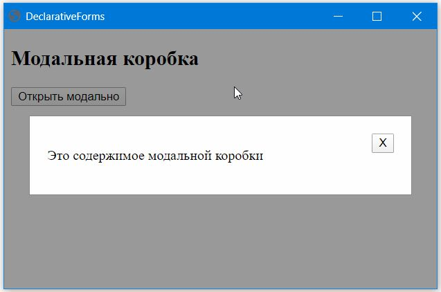

Модальная коробка.

Код примера
Копировать Выделить всё
Перем ДФ, БлокМодальный;
Процедура Кнопка1_Нажатие() Экспорт
БлокМодальный.Стиль.Отображать = ДФ.Отображать.Блок;
КонецПроцедуры
Процедура Кнопка2_Нажатие() Экспорт
БлокМодальный.Стиль.Отображать = ДФ.Отображать.Отсутствие;
КонецПроцедуры
ПодключитьВнешнююКомпоненту("C:\444\111\DeclarativeForms\DeclarativeForms\bin\Debug\DeclarativeForms.dll");
ДФ = Новый ДекларативныеФормы();
Форма1 = ДФ.Форма;
Форма1.НачальнаяШирина = 500;
Форма1.НачальнаяВысота = 300;
Заголовок2 = Форма1.ДобавитьДочерний(ДФ.Заголовок2());
Заголовок2.Текст = "Модальная коробка";
Кнопка1 = ДФ.Кнопка();
Кнопка1.Родитель = Форма1;
Кнопка1.Текст = "Открыть модально";
Кнопка1.Нажатие = ДФ.Действие(ЭтотОбъект, "Кнопка1_Нажатие");
БлокМодальный = Форма1.ДобавитьДочерний(ДФ.Блок());
БлокМодальный.Стиль.Отображать = ДФ.Отображать.Отсутствие;
БлокМодальный.Стиль.Позиция = ДФ.Позиция.Фиксировано;
БлокМодальный.Стиль.ЗетИндекс = 1;
БлокМодальный.Стиль.ЗаполнениеСверху = 100;
БлокМодальный.Стиль.Лево = 0;
БлокМодальный.Стиль.Верх = 0;
БлокМодальный.Стиль.Ширина = "100%";
БлокМодальный.Стиль.Высота = "100%";
БлокМодальный.Стиль.Переполнение = ДФ.Переполнение.Авто;
БлокМодальный.Стиль.ЦветФона = "rgba(0, 0, 0, 0.4)";
БлокМодальный.Нажатие = ДФ.Действие(ЭтотОбъект, "Кнопка2_Нажатие");
БлокСодержимоеМодального = БлокМодальный.ДобавитьДочерний(ДФ.Блок());
БлокСодержимоеМодального.Стиль.ЦветФона = ДФ.Цвет(254, 254, 254);
БлокСодержимоеМодального.Стиль.Отступ = ДФ.Отступ(, , , , Истина);
БлокСодержимоеМодального.Стиль.Заполнение = ДФ.Заполнение(20, 20, 20, 20);
БлокСодержимоеМодального.Стиль.Границы = ДФ.Границы(1, ДФ.СтильГраницы.Сплошная, ДФ.Цвет(136, 136, 136));
БлокСодержимоеМодального.Стиль.Ширина = "80%";
БлокСодержимоеМодального.Стиль.Высота = 50;
Абзац1 = БлокСодержимоеМодального.ДобавитьДочерний(ДФ.Абзац());
Абзац1.Текст = "Это содержимое модальной коробки";
Абзац1.Стиль.ГоризонтальноеВыравнивание = ДФ.ГоризонтальноеВыравнивание.Лево;
Кнопка2 = БлокСодержимоеМодального.ДобавитьДочерний(ДФ.Кнопка());
Кнопка2.Текст = "Х";
Кнопка2.Нажатие = ДФ.Действие(ЭтотОбъект, "Кнопка2_Нажатие");
Кнопка2.Стиль.ГоризонтальноеВыравнивание = ДФ.ГоризонтальноеВыравнивание.Право;
Форма1.Открыть();
Смотрите также
Библиотека DeclarativeForms | Примеры тестирования